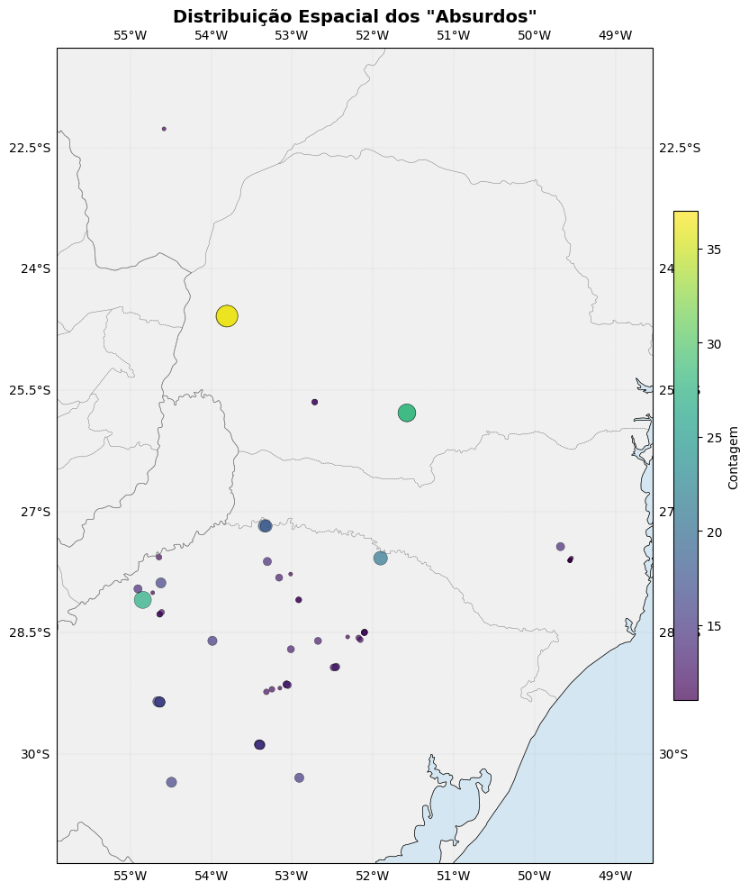
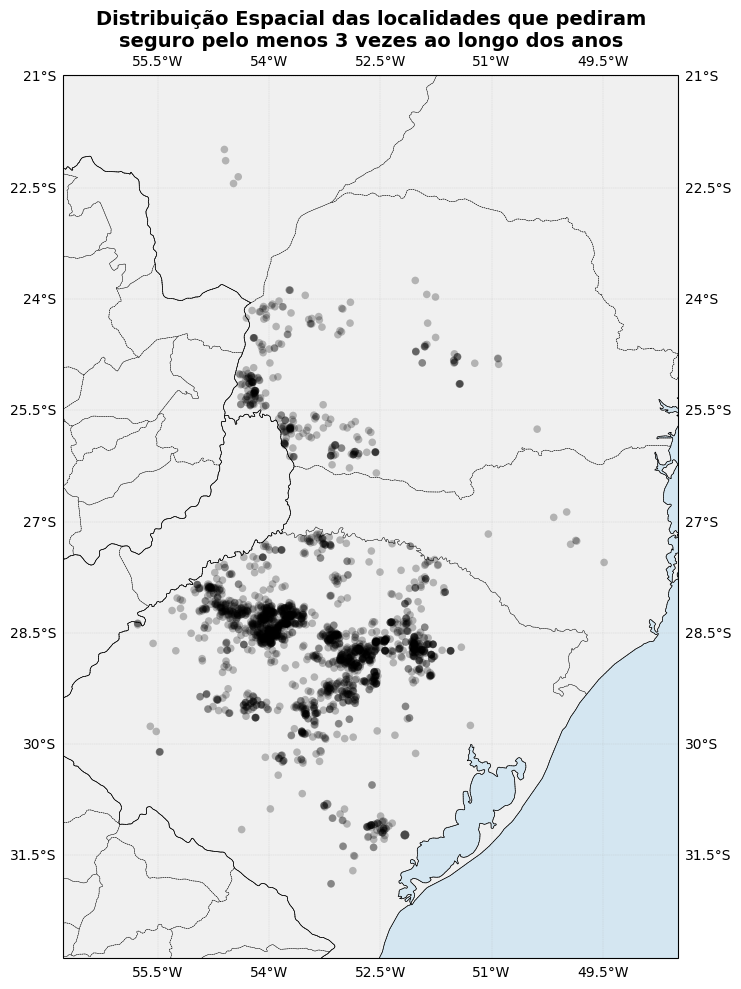
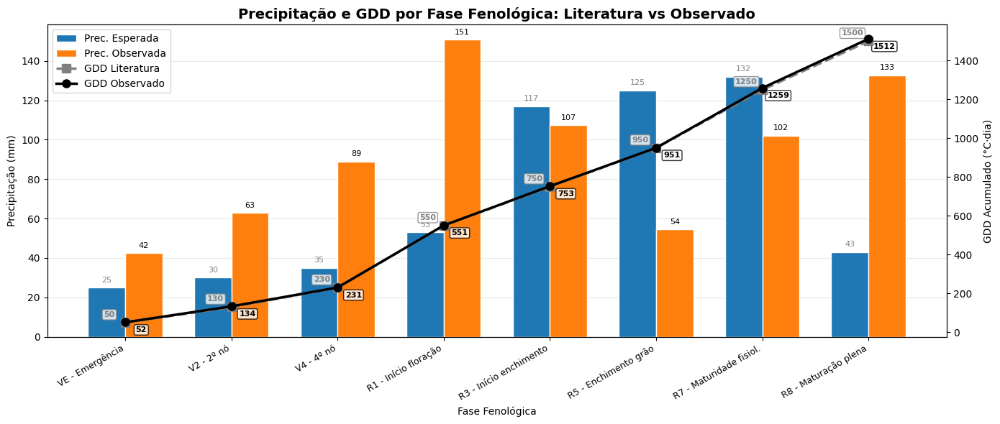

Aula prática 2 — Sicor + INMET: plausibilidade espacial e GDD da soja
Esta aula integra três bases num único fluxo de trabalho:
o recorte do Sicor com COPs deferidas (
sicor-interest-data.csv),o catálogo de estações automáticas do INMET (
coordenadas-inmet.csv),os CSVs horários do INMET baixados na aula anterior.
A partir delas, construímos uma rotina exploratória que (i) limpa as coordenadas do Sicor, (ii) destaca padrões espaciais suspeitos de COPs recorrentes, (iii) localiza as três estações INMET mais próximas de um ponto via fórmula de Haversine e (iv) estima o estádio fenológico da soja por acúmulo de graus-dia (GDD) para verificar se o evento declarado é plausível no momento da fenologia da cultura.
Objetivo
Demonstrar o fluxo central da disciplina: cruzar uma COP do Sicor com observações meteorológicas próximas e verificar se o evento alegado é consistente com (a) a chuva acumulada no período do evento, (b) a chuva acumulada no ciclo completo e (c) a fase fenológica provável da cultura na data do evento.
Dados utilizados
Arquivo |
Origem |
Conteúdo |
|---|---|---|
|
Recorte SQL do banco Sicor (ver bloco SQL abaixo) |
COPs deferidas × ZARC × glebas × RCP, todas as culturas e safras disponíveis. |
|
Cabeçalho dos CSVs do INMET (gerado por shell) |
|
|
Download da aula 1 |
Séries horárias de temperatura, precipitação, vento, etc. |
A consulta SQL que originou o Sicor
O recorte sicor-interest-data.csv é o resultado de uma única
consulta integrada ao banco do Sicor — ela mescra a COP, o RCP, o
ZARC e a geometria da gleba. Conhecer essa origem é importante: a
fonte explica os valores estranhos que precisaremos limpar adiante
(longitudes positivas, latitudes no hemisfério norte) e as colunas que
serão usadas em todas as próximas aulas.
SQL completa do recorte sicor-interest-data.csv
-- =====================================================================
-- CONSULTA INTEGRADA: COPs DEFERIDAS × ZARC × GLEBAS × RCP
-- =====================================================================
-- Objetivo: reunir as principais dimensões para avaliar a
-- plausibilidade de COPs deferidas. Integra:
-- 1. A COP em si (evento, datas de plantio/colheita, solo, ciclo)
-- 2. O RCP (datas do evento informadas pelo perito)
-- 3. O ZARC (risco do decêndio município × cultura × grupo × solo)
-- 4. A geometria da gleba (em SIRGAS 2000)
-- =====================================================================
SELECT
cop.ref_bacen,
statuscopproagro.descricao AS status_cop,
eventoproagro.nome_evento,
empreendimento.produto,
ciclocultivarproagro.descricao_ciclo,
rcp.dt_inicio_evento,
rcp.dt_fim_evento,
cop.dt_comunicacao,
cop.dt_inicio_plantio,
cop.dt_fim_plantio,
cop.dt_inicio_colheita,
cop.dt_fim_colheita,
ST_Area(ST_Transform(ST_GeomFromText(gleba.gt_geometria, 4674), 31983))
/ 10000.0 AS area_gleba_ha,
gleba.nu_indice,
ST_X(ST_Centroid(ST_GeomFromText(gleba.gt_geometria, 4674)))
AS longitude_centroide,
ST_Y(ST_Centroid(ST_GeomFromText(gleba.gt_geometria, 4674)))
AS latitude_centroide,
zarc.data_inicial_decendio,
zarc.data_final_decendio,
zarc.risco AS risco_percentual,
extract(YEAR FROM op.dt_emissao) AS ano_emissao,
op_complemento.cd_ibge_municipio,
op.cd_estado
FROM sicor_cop_basico cop
INNER JOIN ciclocultivarproagro
ON cop.cd_ciclo_cultivar = ciclocultivarproagro.cd_ciclo_cultivar
INNER JOIN sicor_operacao_basica_estado op
ON op.ref_bacen = cop.ref_bacen AND op.nu_ordem = cop.nu_ordem
INNER JOIN sicor_complemento_operacao_basica op_complemento
ON op.ref_bacen = op_complemento.ref_bacen
AND op.nu_ordem = op_complemento.nu_ordem
INNER JOIN eventoproagro
ON cop.cd_evento = eventoproagro.cd_evento
INNER JOIN empreendimento
ON op.cd_empreendimento = empreendimento.cd_empreendimento
INNER JOIN statuscopproagro
ON cop.cd_status = statuscopproagro.cd_status
LEFT JOIN LATERAL (
SELECT CASE LOWER(empreendimento.produto)
WHEN 'soja' THEN 'soja'
WHEN 'milho' THEN 'milho 2ª safra'
WHEN 'trigo' THEN 'trigo sequeiro'
ELSE NULL
END AS cultura_zarc
) mapa ON TRUE
LEFT JOIN zarc
ON op_complemento.cd_ibge_municipio = zarc.geocodigo
AND cop.cd_tipo_solo::text = zarc.cod_solo::text
AND LOWER(ciclocultivarproagro.descricao_ciclo) = LOWER(zarc.grupo)
AND mapa.cultura_zarc = zarc.cultura
AND cop.dt_inicio_plantio <= zarc.data_final_decendio
AND zarc.data_inicial_decendio <= cop.dt_fim_plantio
LEFT JOIN sicor_glebas_wkt gleba ON cop.ref_bacen = gleba.ref_bacen AND cop.nu_ordem = gleba.nu_ordem
LEFT JOIN sicor_rcp_basico rcp ON cop.ref_bacen = rcp.ref_bacen AND cop.nu_ordem = rcp.nu_ordem
WHERE statuscopproagro.descricao = 'deferida'
AND empreendimento.finalidade = 'custeio'
AND empreendimento.atividade = 'agrícola'
AND empreendimento.modalidade = 'lavoura'
ORDER BY cop.ref_bacen, cop.nu_ordem;
Nota
O cruzamento com o ZARC só retorna linhas para soja, milho e
trigo — as únicas culturas atualmente carregadas na tabela ZARC.
Para as demais culturas, data_inicial_decendio,
data_final_decendio e risco_percentual virão NULL, o
que não indica erro.
Passo 1 — carga e diagnóstico das coordenadas
import pandas as pd
df_sicor = pd.read_csv('sicor-interest-data.csv')
df_sicor.head()
Olhando os extremos das colunas espaciais, aparecem dois sintomas clássicos do recorte:
df_sicor['longitude_centroide'].max() # 65.66
df_sicor['latitude_centroide'].max() # 47.89
Brasil não tem longitude positiva nem latitude maior que ~6°N. O banco armazena longitudes como valor absoluto (sem o sinal de oeste) e tem registros espúrios fora do território nacional. Fazemos duas correções sequenciais:
# Correção 1 — restaurar o hemisfério oeste
df_sicor['longitude_centroide'] = df_sicor['longitude_centroide'].abs() * -1
# Correção 2 — cortar para a bounding box do Brasil
df_sicor = df_sicor.loc[
df_sicor['latitude_centroide'][
(df_sicor['latitude_centroide'] >= -34) &
(df_sicor['latitude_centroide'] <= 6)
].index
]
df_sicor = df_sicor.loc[
df_sicor['longitude_centroide'][
(df_sicor['longitude_centroide'] >= -75) &
(df_sicor['longitude_centroide'] <= -33)
].index
]
Filtramos depois a cultura de interesse:
df = df_sicor[df_sicor['produto'] == 'soja']
Passo 2 — diagnóstico de pontos com muitas COPs
Quando uma mesma coordenada (mesmo lat/lon de centróide) aparece em dezenas de COPs, há indício de cooperativa (várias glebas registradas no endereço da matriz) ou de centroide compartilhado por muitas glebas pequenas. Esse caso precisa ser tratado antes de mapear, caso contrário um único endereço suprime o sinal regional.
contagem = (
df
.groupby(['longitude_centroide', 'latitude_centroide'])
.size()
.reset_index(name='contagem')
.sort_values('contagem', ascending=False)
)
absurdos = contagem[contagem['contagem'] > 10]
Visualizando a distribuição desses “absurdos” com Cartopy:
import matplotlib.pyplot as plt
import cartopy.crs as ccrs
import cartopy.feature as cfeature
import numpy as np
proj = ccrs.PlateCarree()
fig, ax = plt.subplots(figsize=(12, 10), subplot_kw={'projection': proj})
margin = 1
ax.set_extent([
absurdos['longitude_centroide'].min() - margin,
absurdos['longitude_centroide'].max() + margin,
absurdos['latitude_centroide'].min() - margin,
absurdos['latitude_centroide'].max() + margin,
], crs=proj)
for feat in (cfeature.BORDERS, cfeature.STATES, cfeature.COASTLINE):
ax.add_feature(feat, linewidth=0.5)
ax.add_feature(cfeature.LAND, facecolor='#f0f0f0')
ax.add_feature(cfeature.OCEAN, facecolor='#d4e6f1')
sizes = np.interp(absurdos['contagem'],
[absurdos['contagem'].min(), absurdos['contagem'].max()],
[10, 300])
sc = ax.scatter(
absurdos['longitude_centroide'], absurdos['latitude_centroide'],
c=absurdos['contagem'], s=sizes, cmap='viridis',
alpha=0.7, edgecolors='k', linewidths=0.3,
transform=proj, zorder=5,
)
plt.colorbar(sc, ax=ax, shrink=0.6, pad=0.02, label='Contagem')
ax.gridlines(draw_labels=True, linewidth=0.3, alpha=0.5, linestyle='--')
ax.set_title('Distribuição espacial dos "absurdos"', fontsize=14, fontweight='bold')
plt.show()

Figura 5 - Centróides do Sicor com mais de 10 COPs no mesmo ponto. A concentração no oeste do Paraná é compatível com um centróide institucional (cooperativa).
Deduplicação por data de comunicação
A solução adotada na aula é contar datas de comunicação únicas
(nunique('dt_comunicacao')) — assim cada par (lon, lat) é
penalizado quando o mesmo dia é repetido em várias glebas:
contagem_filtrada = (
df
.groupby(['longitude_centroide', 'latitude_centroide'])['dt_comunicacao']
.nunique()
.reset_index(name='contagem')
.sort_values('contagem', ascending=False)
)
contagem_filtrada = contagem_filtrada[contagem_filtrada['contagem'] > 2]
E refazemos o mapa com a contagem corrigida:

Figura 6 - Após a deduplicação por dt_comunicacao, o mapa fica dominado
pelos focos típicos do Sul do Brasil — mais coerente com a
distribuição climática da soja.
Heatmap interativo no Folium
Cartopy é ótimo para figuras estáticas. Para inspeção em sala,
folium oferece um heatmap interativo construído a partir de um
mapa Leaflet:
import folium
from folium.plugins import HeatMap
center_lat = contagem_filtrada['latitude_centroide'].mean()
center_lon = contagem_filtrada['longitude_centroide'].mean()
m = folium.Map(location=[center_lat, center_lon], zoom_start=6)
heat_data = contagem_filtrada[
['latitude_centroide', 'longitude_centroide', 'contagem']
].values.tolist()
HeatMap(heat_data, radius=10, blur=5, max_zoom=13).add_to(m)
m
Passo 3 — caso de estudo: a coordenada mais recorrente
Escolhemos o ponto com maior contagem e levantamos suas COPs:
coord = contagem_filtrada[['longitude_centroide', 'latitude_centroide']].iloc[0].values
lon, lat = coord[0], coord[1]
df_azarado = df[
(df['longitude_centroide'] == lon) &
(df['latitude_centroide'] == lat)
]
E o marcamos no mapa Folium criado acima:
folium.Marker([lat, lon], popup='Local COP recorrente').add_to(m)
m
Passo 4 — catálogo de coordenadas do INMET via bash
Antes de buscar a estação mais próxima precisamos de um único CSV com as coordenadas de todas as ~560 estações. Em vez de escrever um parser Python, usamos um pipe Bash que extrai o cabeçalho de cada CSV do INMET:
grep 'CODIGO' -A2 INMET/2024/*.CSV \
| sed 's/^.*CSV//; s/,/./g' \
| cut -d';' -f2 \
| grep -v '^--' \
| paste - - - -d',' > coordenadas-inmet.csv
head coordenadas-inmet.csv
# A042, -15.599722, -48.131111
# A045, -15.596491, -47.625801
# ...
Passo 5 — As três estações INMET mais próximas (Haversine)
Distâncias entre pontos de lon/lat na superfície terrestre devem ser calculadas pela fórmula de Haversine:
onde \(r = 6\,371\) km é o raio médio da Terra, \(\phi\) é latitude e \(\lambda\) é longitude (ambos em radianos). Em Python:
import math
def haversine(lat1, lon1, lat2, lon2):
R = 6371 # km
phi1, phi2 = math.radians(lat1), math.radians(lat2)
dphi = math.radians(lat2 - lat1)
dlambda = math.radians(lon2 - lon1)
a = math.sin(dphi/2)**2 + math.cos(phi1)*math.cos(phi2)*math.sin(dlambda/2)**2
return 2 * R * math.asin(math.sqrt(a))
Aplicando à tabela de coordenadas e mantendo as três mais próximas:
inmet_coords = pd.read_csv(
'coordenadas-inmet.csv',
header=0, names=['cod', 'latitude', 'longitude'],
)
inmet_coords['estacoes_proximas'] = inmet_coords.apply(
lambda row: haversine(lat, lon, row['latitude'], row['longitude']),
axis=1,
)
top3 = inmet_coords.sort_values('estacoes_proximas').head(3)
# cod latitude longitude estacoes_proximas
# ... A837 -28.859211 -52.542387 19.71 km
# ... A883 -28.653333 -53.111944 40.37 km
# ... A839 -28.226667 -52.403611 69.73 km
E adicionamos esses pontos ao mapa Folium para mostrar as distâncias ao ponto azarado:
for _, row in top3.iterrows():
folium.Marker(
[row['latitude'], row['longitude']],
popup=f"{row['cod']} — {row['estacoes_proximas']:.1f} km",
tooltip=row['cod'],
icon=folium.Icon(color='orange', icon='cloud'),
).add_to(m)
Dica
Por que três estações e não só uma? A mais próxima pode ter falhas justamente no período crítico do evento (falta de energia, manutenção, vandalismo). Ter três como backup é uma prática de robustez que repetimos em todas as próximas aulas.
Passo 6 — carregar as séries das estações próximas
Os 19 nomes de coluna originais do INMET são longos e instáveis. Padronizamos para nomes curtos antes de concatenar:
import glob
COLUNAS = [
'DATA', 'HORA',
'PREC',
'PATM', 'PATM_MAX', 'PATM_MIN',
'RAD',
'TEMP', 'TD',
'TMAX', 'TMIN',
'TD_MAX', 'TD_MIN',
'UR_MAX', 'UR_MIN', 'UR',
'VENTO_DIR', 'VENTO_RAJ', 'VENTO_VEL',
]
STN = []
for stn in top3.cod.to_list():
for f in glob.glob(f'INMET/*/*{stn}*.CSV'):
df_stn = pd.read_csv(f, encoding='latin1', sep=';',
decimal=',', skiprows=8)
df_stn = df_stn.loc[:, ~df_stn.columns.str.startswith('Unnamed')]
df_stn.columns = COLUNAS[:len(df_stn.columns)]
df_stn['HORA'] = (df_stn['HORA'].astype(str).str.strip()
.str.replace(' UTC', '', regex=False)
.str.replace(r'^(\d{2})(\d{2})$', r'\1:\2', regex=True))
df_stn['DATA'] = df_stn['DATA'].astype(str).str.replace('/', '-')
df_stn['COD'] = stn
df_stn.index = pd.to_datetime(df_stn['DATA'] + ' ' + df_stn['HORA'])
STN.append(df_stn)
df_all = pd.concat(STN)
E geramos um wide de precipitação para somar por janelas de tempo:
df_prec = (df_all[['COD', 'PREC']]
.pivot_table(index=df_all.index, columns='COD', values='PREC'))
Passo 7 — chuva no período do evento × no ciclo
Pegamos o evento da primeira linha da gleba azarada e calculamos acumulados:
evento = df_azarado.iloc[0]
dt_inicio_evento = evento['dt_inicio_evento']
dt_fim_evento = evento['dt_fim_evento']
dt_plantio = evento['dt_inicio_plantio']
dt_colheita = evento['dt_fim_colheita']
chuva_evento = df_prec.loc[dt_inicio_evento:dt_fim_evento].sum()
chuva_safra = df_prec.loc[dt_plantio:dt_colheita].sum()
# chuva_evento → A837 25.2 mm | A839 53.2 mm | A883 8.6 mm
# chuva_safra → A837 687 | A839 1049 | A883 862 mm
Já temos um primeiro indicador: a chuva do período do evento representa menos de 5–8% da chuva da safra, o que é compatível com a alegação de seca em soja desse caso.
Passo 8 — estádio fenológico via graus-dia (soja)
Para refinar a análise, queremos saber em qual estádio fenológico a soja se encontrava no meio do evento. O método clássico é o acúmulo de graus-dia com método da média simples:
com \(T_b = 10\,^\circ\!C\) e teto \(T_M = 38\,^\circ\!C\) para a soja. Pareceres negativos são zerados.
🖼️ Imagem sugerida (IMG-TODO)
- Imagem ideal:
Diagrama dos estádios fenológicos da soja (VE, V2, V4, R1, R3, R5, R7, R8), com a silhueta da planta evoluindo da emergência à maturação plena.
- Função:
dá uma referência visual aos estádios usados na escala de graus-dia, ajudando a associar cada limiar de GDD à fase da cultura antes de ler o código.
- Busca sugerida:
“soybean phenological stages diagram VE R8”; “estádios fenológicos da soja Embrapa”
- Fonte provável:
Embrapa Soja, Wikimedia Commons
- Facilidade:
alta
import numpy as np
TB = 10
TM = 38
def graus_dia_diario(tmax, tmin, tb=TB, tm=TM):
tmax = np.minimum(tmax, tm)
tmin = np.maximum(tmin, tb)
gd = (tmax + tmin) / 2 - tb
return np.maximum(gd, 0)
def graus_dia_acumulado(df, col_tmax='TMAX', col_tmin='TMIN',
col_prec='PREC', data_semeadura=None,
gd_maturacao=1500):
df_dia = df.resample('D').agg({col_tmax: 'max',
col_tmin: 'min',
col_prec: 'sum'})
df_dia.dropna(subset=[col_tmax, col_tmin], inplace=True)
if data_semeadura:
df_dia = df_dia.loc[data_semeadura:]
df_dia['GD'] = graus_dia_diario(df_dia[col_tmax], df_dia[col_tmin])
df_dia['GD_ACUM'] = df_dia['GD'].cumsum()
fases = {
'VE - Emergência': 50,
'V2 - 2º nó': 130,
'V4 - 4º nó': 230,
'R1 - Início floração': 550,
'R3 - Início enchimento': 750,
'R5 - Enchimento grão': 950,
'R7 - Maturidade fisiol.': 1250,
'R8 - Maturação plena': gd_maturacao,
}
datas_fases = {}
for fase, gd_ref in fases.items():
mask = df_dia['GD_ACUM'] >= gd_ref
if mask.any():
datas_fases[fase] = mask.idxmax()
prec_por_fase = {}
fases_ordem = list(fases.keys())
for i, fase in enumerate(fases_ordem):
if fase not in datas_fases:
break
dt_ini = datas_fases[fases_ordem[i - 1]] if i > 0 else df_dia.index[0]
dt_fim = datas_fases[fase]
prec_por_fase[fase] = {
'data_inicio': dt_ini,
'data_fim': dt_fim,
'dias': (dt_fim - dt_ini).days,
'tmax': df_dia.loc[dt_ini:dt_fim, col_tmax].max(),
'prec_mm': df_dia.loc[dt_ini:dt_fim, col_prec].sum(),
'gd_acum': df_dia.loc[dt_fim, 'GD_ACUM'],
}
df_fases = pd.DataFrame(prec_por_fase).T
df_fases.index.name = 'FASE'
return df_dia, fases, df_fases
Aplicamos à estação mais próxima e identificamos em que fase caiu o meio do evento:
stn = 'A837'
df_stn = df_all[df_all['COD'] == stn][['TMAX', 'TMIN', 'PREC']].copy()
df_gd, fases, df_fases = graus_dia_acumulado(
df_stn, data_semeadura=dt_plantio,
)
import datetime as dt
dti = dt.datetime.strptime(dt_inicio_evento, '%Y-%m-%d')
dtf = dt.datetime.strptime(dt_fim_evento, '%Y-%m-%d')
dt_meio = dti + (dtf - dti) / 2
df_fases[(df_fases['data_inicio'] <= dt_meio) &
(df_fases['data_fim'] >= dt_meio)]
# FASE data_inicio data_fim ...
# R5 - Enchimento grão 2024-01-18 00:00:00 2024-02-11 ...
O meio do evento caiu em R5 (Enchimento de Grão) — a fase mais sensível ao déficit hídrico em soja. Isso é coerente com a alegação de “Seca” registrada na COP.
Passo 9 — comparação com a literatura
Por fim, comparamos a chuva e os graus-dia observados por fase com valores típicos de literatura, num único gráfico:
prec_esperada = {
'VE - Emergência': 25,
'V2 - 2º nó': 30,
'V4 - 4º nó': 35,
'R1 - Início floração': 53,
'R3 - Início enchimento': 117,
'R5 - Enchimento grão': 125,
'R7 - Maturidade fisiol.': 132,
'R8 - Maturação plena': 43,
}
fases_gdd = {
'VE - Emergência': 50,
'V2 - 2º nó': 130,
'V4 - 4º nó': 230,
'R1 - Início floração': 550,
'R3 - Início enchimento': 750,
'R5 - Enchimento grão': 950,
'R7 - Maturidade fisiol.': 1250,
'R8 - Maturação plena': 1500,
}
# … construção do gráfico de barras (Prec) + linhas (GDD)
# com eixo secundário (twinx) e literatura vs observado.

Figura 7 - Comparação literatura × observado por fase fenológica da soja. No exemplo, observa-se déficit hídrico significativo em R3 e R5 na estação A837 — coerente com a alegação de seca no COP.
Discussão
Esta aula sintetiza o algoritmo central que o curso aplicará sucessivamente para cada tipo de evento (chuva excessiva, geada, calor extremo) em Aula prática 3 — chuva excessiva em trigo: % do ciclo e GDD e nas aulas do Análise de sinistros, outliers e tipologias de risco meteorológico:
carregar o recorte de COPs do Sicor e limpar coordenadas;
agrupar por centróide para localizar concentrações suspeitas;
selecionar um ponto de interesse;
encontrar as três estações INMET mais próximas (Haversine);
abrir as séries dessas estações com schema padronizado;
somar a chuva no período do evento e no ciclo completo;
estimar o estádio fenológico via GDD;
comparar observado × literatura.
Próximos passos
Aula prática 3 — chuva excessiva em trigo: % do ciclo e GDD — mesma rotina para Chuva excessiva em trigo (Tb = 5°C, novas faixas fenológicas).
Aula prática 4b — manipulando dados em grade com xarray e Cartopy — quando a estação INMET está longe demais, recorremos ao MERGE/SAMeT em grade.
Mecanismos fisiológicos — base conceitual de graus-dia e fenologia.